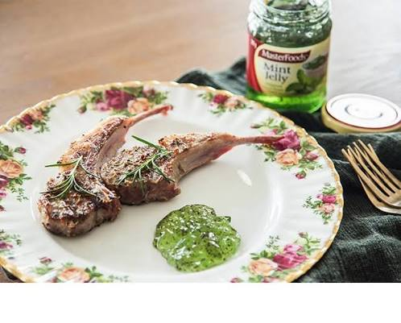

그것은 민트젤리랑 같이 먹는것
츄라이츄라이

그것은 민트젤리랑 같이 먹는것
츄라이츄라이


민초 혐오하는데 저건 진짜 조합이 좋음
민초가 아니니까
나랑 취향 다르네? 전쟁하자
대충 젤리 녹여서 민트 티백 뜯어서 섞으면 됨?
민트초코가문제인거지 민트는 죄없음
민트초코도 맛있지만 저건 민트'젤리'입니다.
양고기에 치약을 왜 발라요
맛있어
의외의 조합인데 맛있음 ㅋㅋ
민초 좋아하는데 저건 진짜 혐오스러움
양고기 그 특유의 향도 살짝 눌러주고 기름기를 민트가 정리해주니까 진짜 담백한 양고기를 즐길 수 잇는 개 좋은 조합
민트젤리가 양고기 육향이랑 진짜 잘맞음 먹어본 사람이면 싫어할수가 없음
첨 먹어보고 진짜 ㅈ같았음 먹으라고 내놓은건지 의심될정도 식당에서 장난치는줄 알았다
양고기에 민트젤리는 안먹어봤는데, 디종머스타드 발라먹으면 진쨔맛있음
홀그레인ㄱㄱ
당근라페 ㄱㄱ

이거 마따
먹어봤는데 난 별로… 민초도 민초치도 잘먹는데 이건 좀
민트소스 맛있지
민트젤리 잘어울림
설탕 많이 들어간 치약 맛인데 나쁘지 않음 쯔란이랑 기본적으로 먹다가 질리면 한번 먹는 용도로 씀
비쥬얼은 별로인데 조합 괜찮음
나도 민초 싫어하지만 저런 민트소스류는 진짜 좋음
고기류 잡내 잡아주고 먹고 나서 입 속의 찝찝함을 싹 가시게 해줘서 깔끔함
민트랑 초코를 같이먹는게 별로인거지 민트는 개운하고 맛있어
민트젤리라는게 있다니 너무 놀랍다..
영국놈들꺼야ㅋ
초 코 에 만 쳐 넣 지 말 라 고
민트들어가있는 음식 잘 먹고 고수도 존나 잘먹는데 나는 반대로 저거는 진짜 못먹겠더라ㄷㄷ
별로 쯔란이 최고야
고기를 달달한거에 먹는다 잼바른다 이런거 극혐이신분들 갈비찜과 제육볶음에 들어가는 설탕빼야함
저거에 쯔란 섞어서 찍어먹어도 맛있어
민초 극혐판데
존나 어울림
민초랑 다름
고전적인 조합임
")
")
양치할때 칫솔 저기다 담갔다가 빼면 되겠네??
오랜만에 프렌치랙 땡기네
원물 통으로 사서 마치 육회를 숟가락으로 퍼먹는 느낌으로 먹어줘야함
아니 음식가지고 장난치지말라니깐?!
민트젤리 없어서 그냥 집에 있는 치약 짜서 찍어 먹었어!
다먹고 양치안해도 되니 좋더라 ㅎㅎ
시도해 봤는데 나는 그냥 쯔란이 최고인 듯
진짜 맛있었음ㅇㅇ
궁금하네 한번 먹어보고싶다 ㅋㅋㅋ
우리👩👩👧민초🍃🍫배척😫하지마세요🙅♀️ 님이👤민초🍃🍫보다 초코칩🍪있어?😑 님이👤민초🍃🍫보다 박하맛🍃이나?🤨 님이👤민초🍃🍫보다 청록색🧤이야?😤 다시는...❌ 민초🍃🍫 무시🤷♀️하지마🖕🏻
민트는 🔮신성한 허브🌿이고 카카오는 신의🧞♂️ 열매🥥이기 때문에 민트초코🌿🍫는 신성함🔮이 두배✌🏻입니다 사악한 자👿들의 입 안👄에 민트초코🌿🍫를 넣으면 뒤집어지는🤪 이유입니다‼️